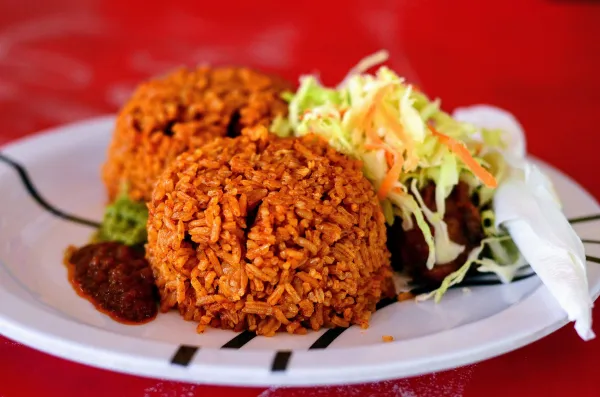

Home
Simple Nigerian Jollof Rice Recipe

Description
Nigerian Jollof Rice is a legendary, one-pot dish celebrated for its deep
orange hue and complex, savory profile. At its core, it is long-grain
parboiled rice cooked in a rich, fried tomato and red pepper base,
seasoned with a distinct blend of curry, thyme, and bay leaves.
Ingredients
- 3 Large Red Bell Peppers (Tatashe)
- 3 Medium Tomatoes
- 1–2 Scotch Bonnet Peppers (Ata Rodo)
- 1 Medium Red Onion
- 4 Cups Long-Grain Parboiled Rice (or Golden Sella Basmati)
- 2 Cups Chicken Stock (Rich and well-seasoned)
- 1/2 Cup Vegetable Oil
- Water (Only if needed to supplement the stock)
- 1 Medium Red Onion (Sliced for frying)
- 3 tbsp Tomato Paste (Double concentrated)
- 1 tsp Minced Ginger
- 2 cloves Garlic (Minced, optional)
- 3 Dried Bay Leaves
- 1 tbsp Nigerian Curry Powder
- 1 tsp Dried Thyme
- 3 Bullion Cubes (Maggi or Knorr)
- 1 tsp White Pepper (Optional)
- Salt (To taste)
- 1 tbsp Butter (Added at the end for extra shine and flavor)
-
Extra Sliced Onions & Tomatoes (Optional, for steaming on top at the
final stage)
Steps
-
Blend: Combine the red bell peppers, tomatoes, scotch bonnets, and one
onion. Blend until smooth
-
Reduce: Pour the blend into a pot and boil it over medium-high heat. Let
the water evaporate until you are left with a thick, concentrated paste.
This removes the "raw" tomato taste.
-
Fry Onions: Heat the vegetable oil in a large, heavy-bottomed pot. Add
the sliced onions and fry until they are golden brown and fragrant.
-
Fry Tomato Paste: Add the tomato paste. Stir constantly for 5–8 minutes.
It should turn a darker red and lose its sourness.
-
Combine: Pour in your reduced pepper blend. Fry this mixture together
for another 10 minutes. You’ll know it’s ready when the oil starts to
float to the top and the sauce looks grainy.
-
Season: Add the bay leaves, curry powder, thyme, ginger, bullion cubes,
and white pepper. Stir well.
-
Wash the Rice: Wash your parboiled rice thoroughly with warm water and
salt. Rinse until the water runs clear to remove excess starch (this
prevents sogginess).
-
The Coating: Add the washed rice to the fried sauce. Stir thoroughly so
every single grain is coated in the red oil and sauce.
-
Add Stock: Pour in the chicken stock. The liquid should be just level
with the rice (or about 1cm above). Do not over-water.
-
Taste Check: Taste the liquid now. It should taste slightly
"over-seasoned"—the rice will absorb the flavor as it cooks. Add salt if
necessary.
-
The Foil Seal: Cover the pot tightly with aluminum foil, then place the
lid on top. This traps the steam inside, which is what actually cooks
the rice.
-
Slow Cook: Turn the heat down to low. Let it cook for 20–30 minutes
without opening it.
-
The Smoky Finish: Once the rice is tender, turn the heat up to
medium-high for 3–5 minutes. You want to hear a slight "crackling" sound
as the bottom layer burns slightly—this creates the iconic smoky flavor.
-
The Fluff: Add a tablespoon of butter and some fresh onion rings on top.
Cover for 2 more minutes, then use a wooden spoon or fork to fluff the
rice.